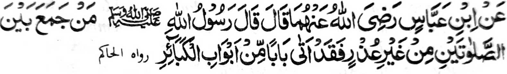

Miyaka thitayan ko Ibn Abbas (Radhiallaho 'Anho) a piyanothol iyan a Pitharo o Rasulollah (Sallallaho 'Alaihi Wasallam), "Sa tao a timo-on niyan so dowa Sambayang a da-a odior iyan na sabenar a miyakara-ot ko pinto a ped ko manga pinto o manga ala a dosa. "
Piyanothol o Ali (Radhiallaho 'Anho) a miyaka isa na Pitharo o Rasulollah (Sallallaho 'Alaihi Wasallam), "Di niyo tha-alika so telo a nganin: So Sambayang igira riya-ot so wakto niyan, so kakobor igira miyapasad thayon-tayong, go so kakhawinga ko raga amay ka mato-on so phangaroma-on." Madakel a tao a ibebetad iyan a ginawa niyan sa phapati-is a Muslim a gi-i ran panimo-on so kipethindegen iran ko Sambayang ko manga wakto ko masa a kapaka kasoy ran sa walay aya dalina iran na so kapelaya-layag, odi na so kandagang. So kata-alika ko Sambayang anda-i kara-ot o wakto niyan taman sa kakhapos o wakto niyan na maIa a dosa. Minsan pen kena ba lagid sa siksa ko kibagaken non, ogaid na tanto a mapasang a mapenggola-ola.